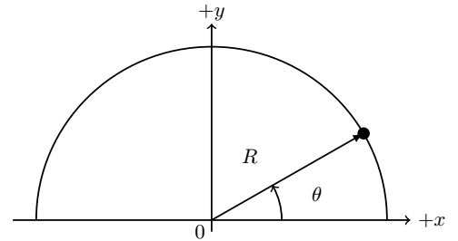

B1.2 Parameterization of Line Integrals#
B1.2.1 Motivation#
In the Introduction to Line Integrals, we have been so fortunate that our paths were aligned well with the \(xy\)-directions in a cartesian coordinate system. However, often the world is not as nice and will serve us some humble pie when applying the approach above. For example, what if the path was part of a circle? Already then it appears messy to evaluate the dot product between our force and the line element. This is where parameterization comes in and saves us from mathematical humiliation (well, we may still be humiliated but then it is at least because of our own inability to do math). The approach of parameterization is a general approach to solving line integrals (or higher orders such surface and volume integrals as well.
B1.2.2 Parameterization#
For simplicity, we will introduce the parameterization for a path in the \(xy\)-plane, but it should be evident how to extend it to the 3D plane. The starting point is to realize that any path can be described by some equation
This may not seem intuitive and we may just have to take the word of mathematicians on this one. An example is the equation of the unit circle, which can be represented by \(g(x,y) = x^2 + y^2 - 1 = 0\). Each point along the path can be represented by some parameter \(s\). This implies that we can write our \(x\) and \(y\) positions in terms of this parameter \(s\): \(x = x(s)\) and \(y = y(s)\). When we are moving some distance \(dl\), we will also change \(s\) such that we have \(ds\) as an infinitesimal change. The position differentials can then be written as (again, review those differentials if you are not confident on this matter):
and
Inserting this into our line integral for work:
Below is an example broken into steps, which hopefully will demonstrate how to use this.
Example 1
Consider the force from before given by \(\vec{f} = 5.0(xy\hat{i} + y^2\hat{j})\) applied to an object. Now let us move the object around in a half–circle, counter-clockwise from \((x,y) = (R,0)\) to \((x,y) = (-R,0)\), where \(R\) is the radius of the half–circle. Find the work done by this force.
Step 1
Make a sketch and recognize the natural parameter \(s\) to use in the problem. Although that will not always be easy, here in Physics II, we will make it relatively straightforward. We are just taking our first steps into the big world. The natural parameter to choose here is the angle \(\theta\) such that \(s \rightarrow \theta\).
Step 2
Write the cartesian coordinates \(x\) and \(y\) in terms of the new coordinate \(\theta\):
and
Step 3
Calculate the derivative of the cartesian coordinates with respect to the new variable:
and
Step 4
Express the vector field (in this case: force) in terms of the new variable:
and
Step 5
Substitute the results from steps 3 and 4 into our parameterized line integral
NOTICE: we essentially re-wrote our line integral of two variables into a line integral of one variable. That is just some cool shit!
Step 6
Now, no one ever told us that parameterizing the line integral over our vector field was going to be pretty, but at least we can solve it. Solve it!
Wow, I lucked out here. The integrand adds up to zero:
Consider a force given by \(\vec{f} = (x\hat{i} + y^2\hat{j})\) N acting on an object. The object moves clockwise from \(\vec{r}_i = (0,3)\) to \(\vec{r}_f = (3,0)\) along a quarter circle centered at \((x,y) = (0,0)\). What is the work done by the force along this path?
Consider a force given by \(\vec{f} = 2.0(x^3\hat{i} + xy^2\hat{j})\) acting on an object. The object moves counter-clockwise from \(\vec{r}_i = (0,0)\) to \(\vec{r}_f = (0,2)\) along a half–circle centered at \((x,y) = (0,1)\). What is the work done by the force along this path?